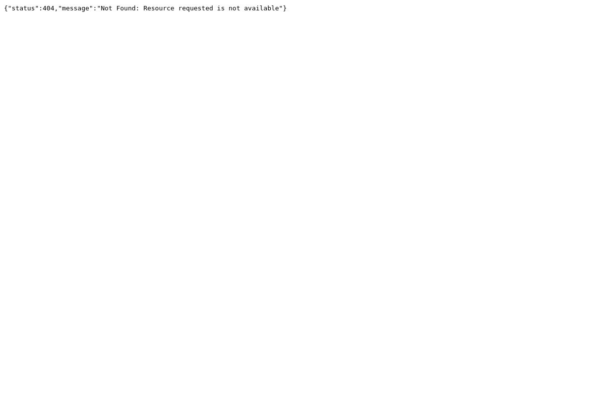
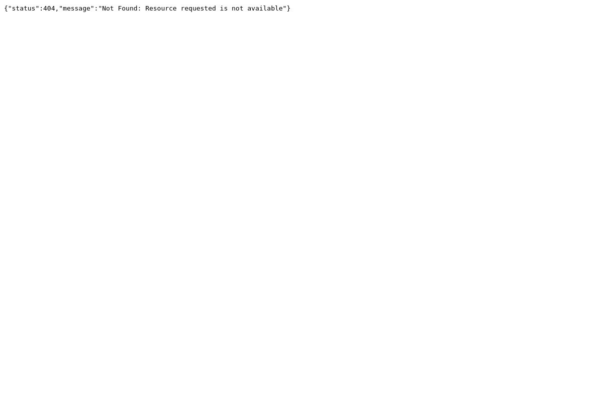

Screeshot
Port 80 Port 443
 

Dig Info
; <<>> DiG 9.11.4-2-Debian <<>> image-service-cdn.staging.cloud.seek.com.au
;; global options: +cmd
;; Got answer:
;; ->>HEADER<<- opcode: QUERY, status: NOERROR, id: 4447
;; flags: qr rd ra; QUERY: 1, ANSWER: 4, AUTHORITY: 0, ADDITIONAL: 1
;; OPT PSEUDOSECTION:
; EDNS: version: 0, flags:; MBZ: 0x0005, udp: 512
;; QUESTION SECTION:
;image-service-cdn.staging.cloud.seek.com.au. IN A
;; ANSWER SECTION:
image-service-cdn.staging.cloud.seek.com.au. 5 IN A 52.84.248.21
image-service-cdn.staging.cloud.seek.com.au. 5 IN A 52.84.248.106
image-service-cdn.staging.cloud.seek.com.au. 5 IN A 52.84.248.50
image-service-cdn.staging.cloud.seek.com.au. 5 IN A 52.84.248.122
;; Query time: 309 msec
;; SERVER: 192.168.58.2#53(192.168.58.2)
;; WHEN: Tue May 21 11:44:06 EDT 2019
;; MSG SIZE rcvd: 136
Host Info
image-service-cdn.staging.cloud.seek.com.au has address 52.84.248.122
image-service-cdn.staging.cloud.seek.com.au has address 52.84.248.50
image-service-cdn.staging.cloud.seek.com.au has address 52.84.248.106
image-service-cdn.staging.cloud.seek.com.au has address 52.84.248.21
Response Header
HTTP/1.1 301 Moved Permanently
Server: CloudFront
Date: Tue, 21 May 2019 15:44:07 GMT
Content-Type: text/html
Content-Length: 183
Connection: keep-alive
Location: https://image-service-cdn.staging.cloud.seek.com.au/
X-Cache: Redirect from cloudfront
Via: 1.1 98ccbffe3db4e160c30337b3be0a3b44.cloudfront.net (CloudFront)
X-Amz-Cf-Id: A3DleKBOapQNurjuGqJ19r1aClQHr8YlkZ8qGnlQZnJIQw6WwEv03w==
HTTP/1.1 404 Not Found
Content-Type: application/json
Content-Length: 74
Connection: keep-alive
Date: Tue, 21 May 2019 10:07:49 GMT
Last-Modified: Fri, 19 Apr 2019 07:58:38 GMT
ETag: "3442bf155418a579af6d80d9315e435f"
Server: AmazonS3
X-Cache: Error from cloudfront
Via: 1.1 54965ba4157e9cb6a34408fe1c3309e2.cloudfront.net (CloudFront)
X-Amz-Cf-Id: GH0RdqPMJ0pd_21Cu3noMFeuYpbaqRFfR-YvWVqhzC7IWzz3QkqEhw==
Nmap Results
nmap -sV -T3 -Pn -p3868,3366,8443,8080,9443,9091,3000,8000,5900,8081,6000,10000,8181,3306,5000,4000,8888,5432,15672,9999,161,4044,7077,4040,9000,8089,443,7447,7080,8880,8983,5673,7443
Starting Nmap 7.70 ( https://nmap.org ) at 2019-05-21 11:44 EDT
Nmap scan report for image-service-cdn.staging.cloud.seek.com.au (52.84.248.50)
Host is up (0.17s latency).
Other addresses for image-service-cdn.staging.cloud.seek.com.au (not scanned): 52.84.248.106 52.84.248.21 52.84.248.122
rDNS record for 52.84.248.50: server-52-84-248-50.tpe52.r.cloudfront.net
Not shown: 32 filtered ports
PORT STATE SERVICE VERSION
443/tcp open ssl/http Amazon CloudFront httpd
Service detection performed. Please report any incorrect results at https://nmap.org/submit/ .
Nmap done: 1 IP address (1 host up) scanned in 20.50 seconds